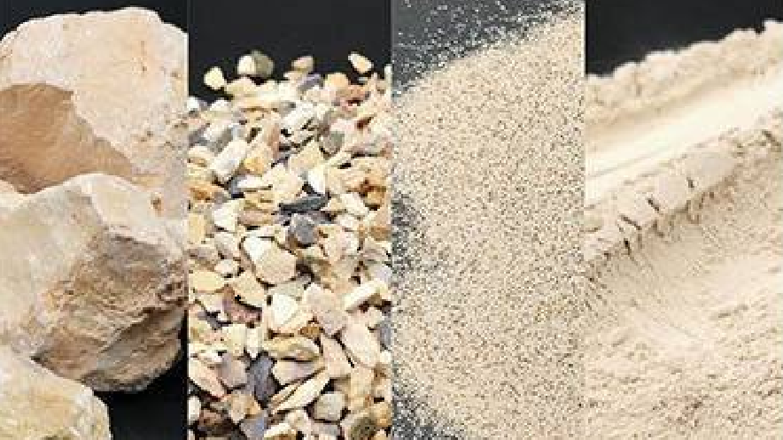

Calcined Bauxite
Calcined Bauxite is an important raw material for the production of high-alumina refractories. It is also widely used in various industrial applications due to its hardness, strength, and excellent heat-resistance properties.
Specifications:
| Characteristic | Value |
|---|---|
| Al2O3 | ≥86% |
| Fe2O3 | ≤2.5% |
| SiO2 | ≤7.5% |
| Tio2 | ≤3.5% |
| moisture content | ≤3.5% |
| loss on ignition | ≤3.5% |
Applications:
- Production of high-alumina refractories
- Abrasive materials
- Steel and cement industries
- Reinforced concrete materials
Packaging:
Calcined Bauxite is available in bulk, jumbo bags, and small bags depending on customer requirements.
- 1.0-ton Jumbo Bags: The material is packed in standard export waterproof packaging to prevent damage during sea, rail, and road transport. Consideration is given to multiple handling during transport and storage. Jumbo bags have a recycled polyethylene inner liner and a bottom discharge device (clamps). Packaging must maintain integrity for at least one year (UV-resistant).
- Technical Jumbo Bags for Enhanced Strength:
- Material: Virgin polypropylene fabric
- Tear load: 50x200 mm fabric strips with a tear load of ≥85 kg (warp and weft)
- Seams: Bottom and side seams with a tear load of ≥60 kg
- Dimensions: Height 1.1 m, diameter 1 m
- Load capacity: 1.5 tons